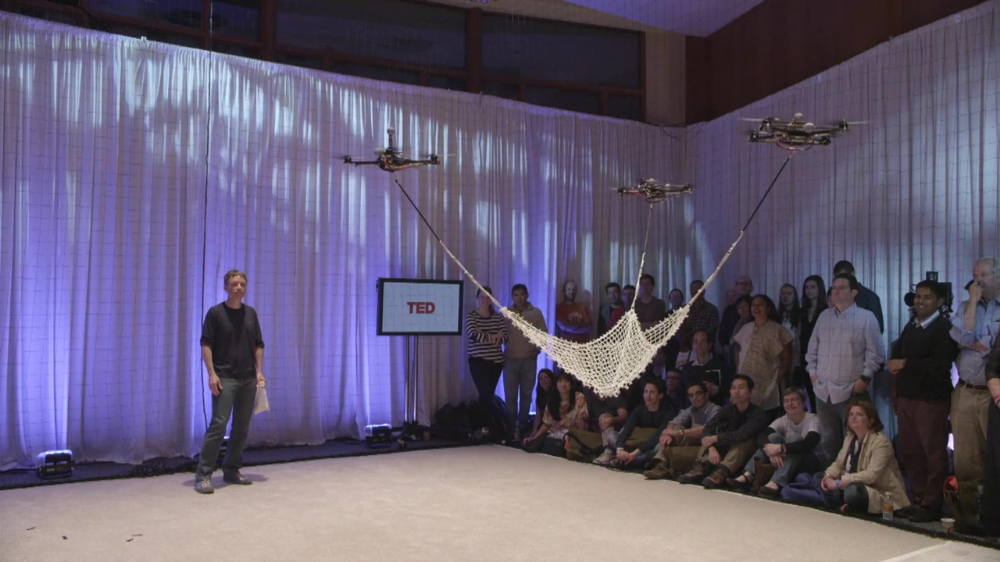
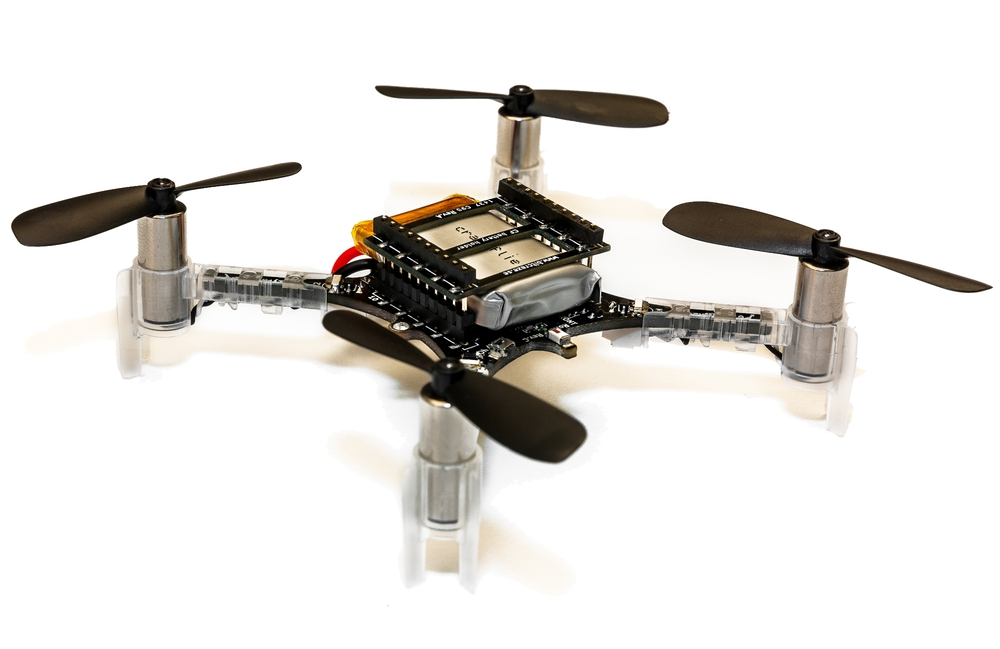
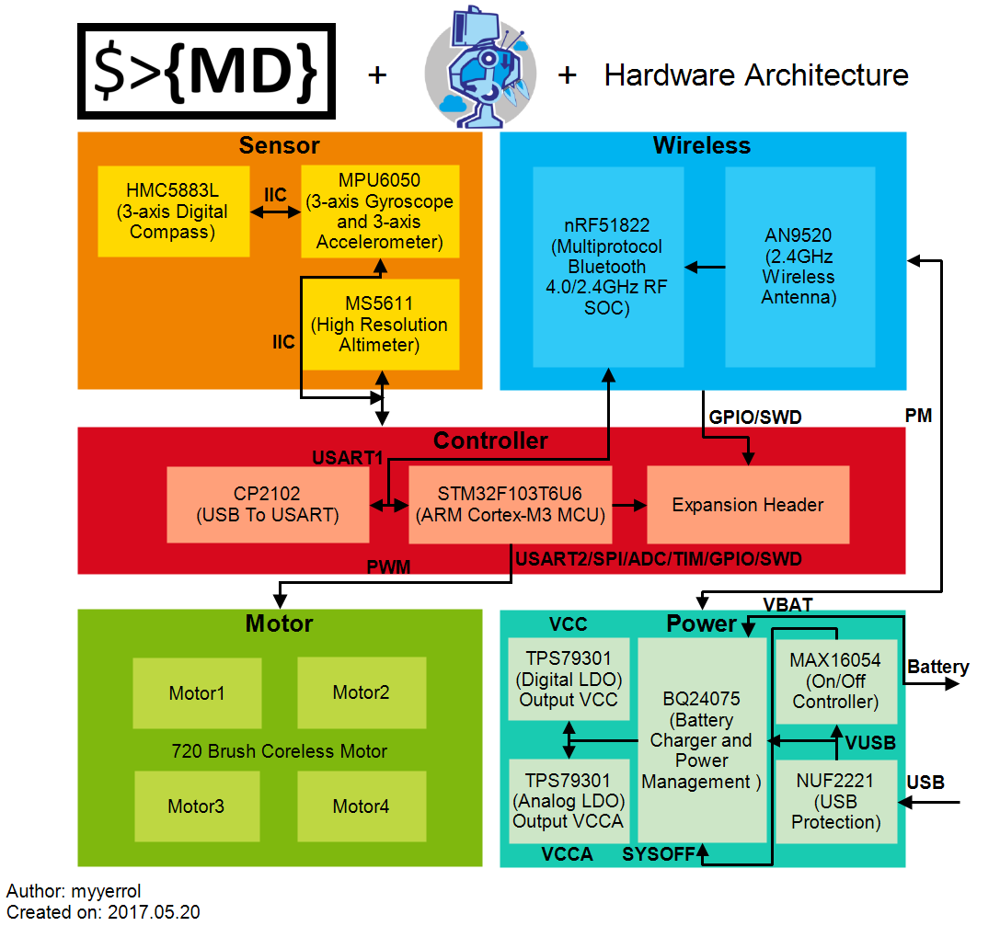
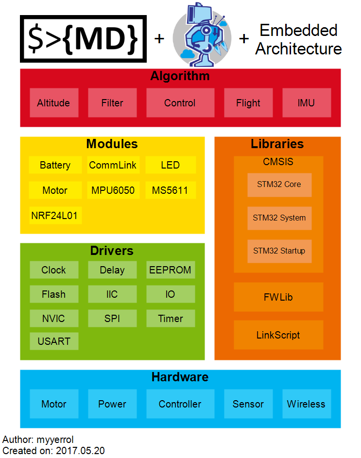
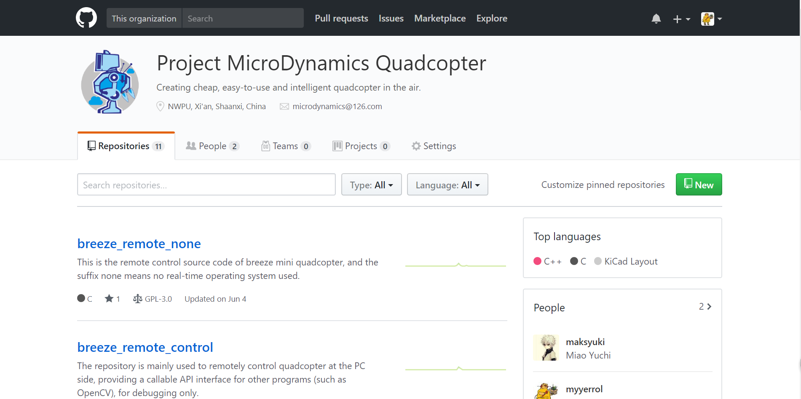

Breeze微型四轴系列（零）：总纲
本篇文章介绍Breeze微型四轴系列的总纲。
前言
我记得自己第一次接触四轴飞行器是在大一，有一次我在TED上看了由瑞士苏黎世联邦理工大学的Raffaello D’Andrea教授所做的关于四轴飞行器的演讲，题目是“The astounding athletic power of quadcopters”，教授边用四轴飞行器进行演示并对其中所用到的数学理论进行讲解，对于当时什么理论都不懂的我来说，最令我惊讶的是在演示环节，那些四轴飞行器能够在高速移动的时候保证放在其顶部的细棍和酒杯不失去平衡，可以在桨叶受损的情况下依然可控，可以通过协作接住由人所抛出的小球并将其击回，可以判断人的手势来做不同的动作等。当时看完这段视频之后我的内心难以平静，脑海里萌生了自制四轴飞行器的想法，但由于后来我加入了舞蹈机器人基地并忙于组内的开发任务，所以这个想法就暂时被搁置了。


一转眼到了大三下学期，我从舞蹈机器人机基地退役。一个偶然的机会，我从maksyuki那里得知有一个叫做Crazyflie的微型四轴飞行器，这一次我算是打从心底里被震撼到了，以下是几点原因：
硬件
首先Crazyflie微型四轴飞行器的硬件设计得非常优秀，不管是PCB机械层的轮廓设计、信号层上元器件的布局还是整个电路板的走线都非常合理，而且最重要的是Bitcraze团队将模块化的理念带入到Crazyflie产品的设计之中，这使得Crazyflie微型四轴除了基本的飞行功能之外，还可以通过堆叠不同扩展坞的方式来实现不同功能的扩展。
软件
Crazyflie微型四轴飞行器的软件开发全部基于Linux开发环境，并使用已有开源且强大的软件工具（比如ARM-GCC，Make、PyQt等）进行开发。除此之外，Crazyflie微型四轴飞行器的软件源码还被托管在GitHub上，非常方便世界各地的爱好者、研究者对其进行二次开发。
文档
除了以上两点有关技术层面的优势，Crazyflie微型四轴飞行器项目还有一个最令我无法抗拒的因素——丰富的文档。说实话，我从来没有看到过一家不以盈利为主要目的团队可以将自己的开源项目文档写得如此详细，但是Bitcraze团队做到了，他们这种乐于分享的精神实在是值得我们学习。

总之，这次在看过Crazyflie微型四轴项目之后，我脑海中有关自制四轴飞行器的想法又被重新唤醒了，于是我们创建了MicroDynamics团队，而Breeze微型四轴项目也就因此顺利地诞生了。
简介
有人曾经说过：当你有好的想法时，就要立即去实现它，特别是如果你从心底里热爱某种事物，你一定会迫不及待地想尽一切办法来完成它，尽管在实现的过程中会遇到很多困难，也会牺牲一些其它的东西，但是当你有朝一日能够看到自己的成果让更多的人受益时，我想没有什么比这更令人快乐的了。我们在组建团队之前也只是两个喜欢在大学里进行DIY的机器人爱好者，但我们希望可以通过自己的双手来为机器人社区做出自己的贡献，哪怕只要很少的一些。
MicroDynamics团队在组建过程中曾在一定程度上受到基地马文科等学长所创建Hands Free项目的影响，有关其项目更详细的介绍，请访问Hands Free项目官方Wiki。MicroDynamics，顾名思义微型动力，它的名字分别取自Microsoft和BostonDynamics这两家伟大的公司。我们想做的就如同名字所体现的那样——搭建一个小型或微型的开源机器人平台，它要足够的便宜、易于开发并且拥有较强的动力学特性，可以让更多的大学生等机器人爱好者真正地参与到实体机器人的开发过程中来，并从中学到一些有价值的知识。
MicroDynamics团队目前从四轴飞行器平台开始，从底层到顶层搭建一套完整的、面向未来的开源机器人开发框架，以便降低模块之间的耦合性，提高机器人整体开发效率。关于MicroDynamics更多详细的开发资料，请访问MicroDynamics团队GitHub（包含开发规范、日志、工程模板）和MicroDynamics Quadcopter项目GitHub（包含硬件设计、软件代码）。
项目概述
内容
MicroDynamics Quadcopter项目是一个面向微型四轴飞行器开发和研究的开源软硬件系统。它以硬件电路和嵌入式框架为核心，丰富的软件算法为支撑，可以完成不同的实验任务。除此之外，在硬件上它还预留有一些接口，可以与第三方定制模块进行连接，便于飞行器功能的扩展。未来在软件上它还将支持目前流行的ROS，使得更多的算法可以被应用其中。
理念
我们团队的理念是：开源、探索、创新。
宗旨
我们团队的宗旨是：以开源共享为基本准则，做到取之开源，回馈开源；其次要拥有探索未知技术领域的勇气和决心，遇到困难绝不退缩；最后强调技术至上，鼓励在掌握已有知识的基础之上，不断开拓创新，做出属于自己的成果。
开发现状
硬件
Breeze微型四轴飞行器硬件电路主要由五个部分组成，以下是硬件的架构图：

电机驱动模块
电机驱动模块主要负责接收主控制器发过来的PWM（脉冲宽度调制）信号来控制四轴飞行器每个有刷空心杯电机的转速。电源管理模块
电源管理模块是四轴飞行器能量的来源，它的主要功能有：负责USB和锂电池电源的切换、管理锂电池的充放电以及对输入的电源进行降稳压操作。传感器模块
传感器模块包括了陀螺仪、加速度计、磁力计和气压计。正是由以上这些传感器所构成的10自由度IMU（惯性测量单元）为四轴飞行器提供了绝对或相对的位置和姿态信息，使得四轴飞行器可以在运动过程中获知自身的运动状态，使其可以更好地预估自己的行为。无线通信模块
无线通信模块根据预先制订的通信协议，在四轴飞行器和远程PC端之间建立起数据通信的桥梁，便于在PC端控制和监视飞行器的运动状态。主控制器模块
主控制器模块是四轴飞行器的核心，它主要接收从上层传感器和无线通信模块发过来的数据，并根据不同的控制命令对姿态数据进行数学解算，最后将解算结果以PWM信号的形式发送给电机驱动模块。软件
Breeze微型四轴飞行器的嵌入式系统架构如下图所示，其中主要包含硬件设备、底层驱动、外设模块和飞控算法等四个部分。

硬件设备
硬件设备部分包含上面第介绍过的电路模块：电机驱动、电源管理、传感器、无线通信以及主控制器。底层驱动
底层驱动部分包含了常用的外设接口（如IIC、SPI、USART）和内部核心功能（如时钟、延时、中断、定时器、EEPROM、Flash）。它主要是根据STM32官方固件库（上图Libraries部分）中的内容，对系统外设接口或内部核心功能进行进一步的封装，以满足上层外设模块的使用需要。外设模块
外设模块是对具体外设硬件进行操作的函数库，它使用底层驱动中的大量函数来实现对硬件的控制。外设模块包含了IMU、电机、电池、NRF24L01和CommLink通信协议栈等。本章将会在后面介绍其中比较重要的几个。飞控算法
飞控算法处在整个嵌入式架构的最顶层，它的实现是要建立在以上三者的基础之上的，比如高度融合、数据滤波、控制算法等。由于整个四轴飞行器的核心功能都是由飞控算法决定的，所以飞控算法是该嵌入式系统的绝对核心，也是开发的重点。文档
如下图所示，MicroDynamics团队GitHub中主要包含了我们团队自己制定的代码规范，Linux下STM32开发的工程模板文件以及记录有我们在开发过程中所遇问题以及解决办法的日志文件。MicroDynamics Quadcopter项目GitHub中则主要包含了Breeze微型四轴飞行器的硬件电路设计、嵌入式代码以及图形化的上位机调试工具等。总之我们把所有能开源的资料都放到了以下两个GitHub组织里，方便交流学习。
由于我们MicroDynamics团队将正式着手开发新一代的微型四轴飞行器，所以Breeze微型四轴飞行器的代码不会再被开发和维护，目前已有内容仅供学习使用。

开源协议
目前MicroDynamics团队的项目文档、开发模板以及Breeze微型四轴飞行器的硬件电路设计、嵌入式代码和上层调试软件均遵循GPL-3.0许可协议，使用者可以免费使用和修改代码，但修改和衍生后的代码不允许做为闭源商业软件进行发布和销售。
MicroDynamics团队拥有其所有项目的版权，而对于项目中所用到的其它开源代码，版权则归其原作者所有。在未经授权的情况下，任何个人、组织不得将MicroDynamics团队的代码用于商业行为，否则追究法律责任！
总纲
以下是我原创的Breeze微型四轴系列文章：
Breeze微型四轴系列（零）：总纲
Breeze微型四轴系列（一）：硬件电路板设计
Breeze微型四轴系列（二）：STM32嵌入式开发-开发环境搭建
Breeze微型四轴系列（三）：STM32嵌入式开发-Makefile详解
总结
Breeze微型四轴飞行器既是我们MicroDynamics团队的第一个项目，也是我本科毕业设计研究的主要内容，虽然它是我们根据国内外开源四轴项目（Crazyflie和Crazepony）模仿制作而来，但是通过亲自动手完成整个四轴飞行器的开发工作，我从其中学到了很多东西，它让我从一个不会用Altium Designer做复杂PCB设计、不懂Linux环境下STM32嵌入式开发以及常用飞控算法原理的普通大四学生真正成长为一名具备基本开发能力的四轴飞行器爱好者。
如果你也是一个喜欢DIY四轴飞行器的大学生或爱好者，但却像当初的我一样没有任何知识基础的话，我希望该Breeze微型四轴系列文章能够让你理解开发四轴飞行器背后所需要的基本知识，并从中受益匪浅。
最后，我要阐明一下我的观点：虽然我们是站在巨人肩膀上的一代，但这并不意味着重复造轮子就没有意义，因为在这个过程中你能够掌握到绝大多数人都不会去学的知识，而这些知识最终将会成为你之后开发之路上最为宝贵的财富！